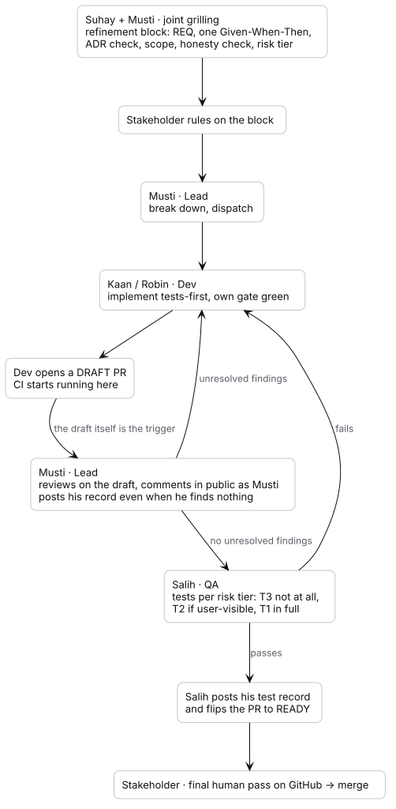

How a change travels from the backlog to main. The guiding principle is shift-left: the code
review and the QA test happen before the pull request is opened, not on it. A PR in this repo is a
release candidate — already reviewed, already tested, CI green — presented to the stakeholder for a
final human pass. It is never a workbench for work in progress.
This keeps two promises:
- The stakeholder only ever receives finished PRs — reviewed by the lead, tested by QA, green. Their final GitHub pass is an audit of the evidence, not a discovery of problems.
- The GitHub history stays honest and readable — every merged PR carries the lead's approving
review and QA's test report, so the trail shows
Lead → QA → Stakeholderat a glance.
The flow

(source: delivery-pipeline.puml)
The gates, in order
Refinement — no dev starts without it, and no one half of it counts. Suhay and Musti grill it together (ADR-0018) and the stakeholder rules on the result: the REQ it serves (or "new → into the register first"), exactly one Given–When–Then criterion, the ADRs it touches and any conflict, what is explicitly out of scope, which existing product claim this change might make untrue, and the risk tier. Suhay owns the story/scope/readiness half and the tier; Musti owns the technical design. Neither decides, because what was promised to the user is not theirs to settle. A refinement one of them ran alone is not a refinement — Kaan and Robin send back work that arrives without the joint block, or with only half of it.
Implementation — Kaan (frontend) / Robin (backend) build tests-first in their own branch/worktree until their own gate is green (
typecheck+tests+ boot proof). No mock data in shipped code; a slice is vertical or it isn't done (ADR-0003/0005).Draft PR — opened as soon as the dev's own gate is green. The draft is the workbench, on purpose: the review happens on it, in the open, so the process can be watched rather than only its result. It also puts CI to work during the review instead of after it.
Review — Musti, in public on the draft, and he starts on his own. He reads the diff locally (cheaper and better than through the API) but posts findings as comments on the PR. He posts his record even when he finds nothing — a silent pass is indistinguishable from not having looked. The slice advances on no unresolved findings, never on "no comments". He runs before Salih: his review costs roughly a third of a real-stack run, and code sent back would invalidate that run anyway.
A draft PR opening is itself the trigger (ADR-0020). Nobody asks for permission to start the review, and the orchestrator does not gate it. The trigger is the PR, not who wrote it: a draft from Kaan or Robin, from Salih, or from the orchestrator all start the review the same way. The rule exists because the alternative was tried — for one slice the orchestrator asked before each dispatch, and that turned the review into something waiting on a hand-off, the same "a role that has to be couriered is a role the process routes around" failure ADR-0017 §9 removed on the tooling side. The gates in this document are the process; an extra approval step in front of one of them is not a safety measure, it is a stall with a person standing in it.
Two exceptions, both already stated elsewhere and neither an invitation to wait: he is not the gate on a PR he authored (§7a), and a red CI pipeline blocks first (gate 6) — a review of code that does not build is wasted.
A thread is a brake; spend it only on demands (ADR-0017 §4a). With "all comments must be resolved" on the branch, opening a review thread holds the merge. The test is one sentence: does this comment owe someone an action before merge? Yes → inline thread anchored at
file:line. No → plain PR comment — just as permanent, just as public, minus a brake it was never entitled to. Findings and change requests are threads; evidence, confirmations, praise, self-corrections and a requested ruling that concludes "no change needed" are comments. A comment carrying a demand anywhere in it is a thread, and the demand is better split into its own comment. And resolve your own satisfied threads at the end of the pass, not in the next round: "no unresolved findings" is the advance criterion, so a satisfied-but-open thread makes that criterion lie.Authors: reply, don't resolve. Pushed a fix to a thread someone opened? Say in the thread what changed. Resolving belongs to whoever opened it, after re-reading — a push claims a finding is addressed, resolving confirms it, and merging the two lets an author close their own findings.
Test — Salih, risk-tiered, and he flips the switch. T3 (docs, DS assets, test infra, config): he does not run — CI covers it and there is nothing there his kind of testing catches. T2: he runs when a user can actually see or do something different. T1 and any genuinely new user-facing surface: full real-stack pass. On a pass he posts his test record and flips the draft to ready-for-review — that flip is the signal that both gates are through and it is the stakeholder's to merge. Nobody else flips it.
CI green. CI re-confirms on the PR what the crew already proved locally. A red pipeline is an automatic block — nothing advances past it, and because the draft opened early, CI has usually already spoken by the time the review finishes.
On the review record: Musti lands a comment ("Lead review: PASS —
", or the findings if he has any), never a formal APPROVE. This is a single-account repo, so GitHub blocks self-approval, and a self-"APPROVE" reads as a review-gate bypass. The comment is the durable trail; the human merge is the only authorization.Stakeholder final pass. A ready-for-review (non-draft) PR has both gates behind it and is his to merge. Most drafts are the crew at work and are not the human's to review, though they are deliberately open to watch: the review thread is the point.
But "the non-draft queue" is not the whole answer, and treating it as one costs a round trip. Under ADR-0017 §7a a PR that was owed no Salih-run — self-authored, or a tier that stood him down — is finished by the crew and stays draft, because nobody in the crew may flip it. That draft looks exactly like one still being worked on. So the crew owes an explicit handover on those (ADR-0017 §7b): a comment naming which gates ran, which were stood down and why, and that the PR is now the stakeholder's to flip or merge. Until that comment exists, a draft means "not yet". (Branch protection can require the CI checks but not "N reviews" — single account, nobody else to approve; the human merge is the gate.)
The evidence block (required in every PR body)
## Evidence
- Review (Musti): <what was checked locally, why it holds> — APPROVE
- Test (Salih): <what booted; flows + breakpoints exercised; real stack vs. contract; honest
confidence; what was NOT covered>
- Acceptance (Salih): <REQ-IDs covered → their acceptance tests, green against the real stack>
- Control proof (ADR-0021, only if this PR adds or changes a control): <what was broken, what
failed as a result, and that it passed again once restored>
- CI: green
On the control-proof line (ADR-0021). A control is anything whose purpose is to constrain, block or guarantee — a CI job, a linter or tool config, an ignore/allow list, a security header, an authorization check, a rate limit, a regression test guarding a specific defect, a seed step something else depends on. A control that has only been watched to pass is unproven: passing is also what the broken version does. Break it, watch the right thing fail, restore it, and write that down. The proof runs where the control runs — a CI gate is proven by a red CI run, a browser-enforced behaviour by a browser. Where a genuine break is impractical, say so and say what was done instead; silence is not an option. Ordinary feature code is out of scope — its tests are already the proof.
Risk tiers — match the machinery to the risk
Not every slice needs the same weight. Applying the full grill + deep review + live 375/768/1280 test + arc42 to a static splash screen costs as much as it does for the auth flow — and buys almost nothing. So each slice gets a tier, assigned by Suhay at readiness (ADR-0018 moved it back to the Scrum Master seat; Musti may bump it up on a risk he sees, never silently down — the assigning and the bumping sit in different seats on purpose, so the ratchet only turns one way). The tier sets the depth, never waives honesty, tests-first, DS-fidelity, or vertical-never-mock — those hold at every tier.
| Tier | What it is | Gate depth |
|---|---|---|
| T1 — critical | Auth, session, encryption, money/estimates, DSGVO, anything a real user's trust or data rides on | Full: Musti technical grill + ADR, tests-first, Musti local review, Salih live test (boot + flows at 375/768/1280 on the real seeded stack + REQ acceptance), arc42 moves with it, full evidence block |
| T2 — standard | A normal vertical wired to an existing/contract'd surface (a screen, a CRUD endpoint) | Tests-first, Musti local review, Salih local test of the touched flow(s) on the real stack (not necessarily all three breakpoints unless layout is in play), evidence block. ADR/arc42 only if the architecture actually changes. |
| T3 — trivial | Static/presentational screen, DS-asset or copy sync, docs, a pure-mechanical change | Dev self-check + gate green (typecheck + tests) + a light Musti glance (async on the PR is fine). No live-test, no arc42, no grill. |
The tier is named on the ticket and repeated in the PR body, so the reviewer and stakeholder know which depth to expect. When in doubt, tier up — the cost of over-testing a T1 is smaller than the cost of under-testing something that turns out to touch trust or data. (A splash screen is T3; the Cockpit or Profil vertical is T2; better-auth / encryption / the guest-upgrade transaction are T1.)
How workers report — condensed, verdict-first
A subagent's report is not a transcript. Lead with a verdict + a ≤10-line summary — PASS/FAIL (or APPROVE/REQUEST-CHANGES), what changed, and the one or two things that actually matter — then put the detail below, so it can be skimmed and so it doesn't flood the orchestrator's (or the next agent's) context. Multi-agent systems cost real tokens; a tight top-of-report is how we keep that cost down without losing the audit trail. The PR evidence block stays curated (it's the durable record) — but the working report back to the orchestrator leads with the conclusion, details on demand.
The acceptance loop — the pipeline chases the human standard
Green CI is only as honest as its acceptance tests: the CORS defects proved "green" can lie. The fix is a feedback loop that keeps the automated gates converging on what the stakeholder would actually accept. ADR-0016 retired the Product Owner seat, so the human end of this loop is the stakeholder — the mechanism is unchanged, but it now has exactly one person feeding it. If they stop exercising the preview, the loop stops learning; nothing else supplies its input.
- Salih is the platform + gate engineer, not the per-slice tester. His top deliverables are a frictionless, always-current seeded preview (per-PR / one-command stack) that anyone can exercise, and CI gates that are realistic — every escaped bug and every stakeholder complaint becomes a permanent automated check against the real stack. He retires a manual check only once its automated equivalent is in CI and proven to catch the class; a thin risk-tiered exploratory pass remains for genuinely-new T1 surface. The devs own their own PR's checks to green (Musti approves, the stakeholder merges) — verification parallelises across PRs instead of funnelling through one tester.
- The stakeholder tests often, per slice, on the preview — risk-tiered. Because Salih made testing one click, a quick human sniff-test before merge on T1/user-facing slices ("does it do what I meant, would a user accept it?") costs minutes of judgement, not a re-test. T3 skipped, T2 spot-checked. It is the fast human gate on is-this-the-real-need, not a bottleneck.
- The ping-pong invariant: a complaint is never just fixed — it always also becomes a test. When the stakeholder finds "this didn't work" on a green build, diagnose the fork: wrong thing built right (the criterion was incomplete → refine it in the register) or right thing built wrong (the test lied → Salih hardens it). Either way the finding lands as a new/corrected acceptance test in CI (red), a dev makes it green, and only then is it closed. Every round hardens the gate, so "CI green" asymptotically becomes "the stakeholder would accept it" — and shifting the register's Given–When–Then left into the red-first ATDD test means most of the need is automated before the build, leaving the loop to mop up only the residual.
Rules that keep it fast
Two tracks, both loaded. Suhay and Musti own capacity together (ADR-0018) — Suhay lines up the ready work, Musti shapes the technical split: work is split so the two devs — Kaan (frontend) and Robin (backend) — run in parallel on non-colliding slices — no dev sits idle while others build. This is the capacity that keeps development fast: the board must stay deep enough in ready, independent slices that four parallel tracks never starve. Planned at a sustainable pace (the team gets its daily breather; no crunch).
The shared contract is frozen per track before either dev starts (#70). When a slice is split into a frontend and a backend track, the OpenAPI contract both build against (request and response fields, error shapes, and when persistence becomes real) is pinned at Planning and named in the slice's planning record, so neither dev learns the shape from whoever finishes first. Slice 1 showed the cost: the Onboarding frontend was built against an in-memory contract that changed under it once real
/v1/profilepersistence landed. A contract change found mid-slice is flagged to the other track's owner the same day it is decided, in the ticket, not discovered at rebase or integration time. Suhay facilitates; Musti makes the technical freeze call. Checked at the next Planning (does the record name the frozen contract?) and the next Retrospective (did anyone report rework from an unannounced change?).WIP limit: at most two slices in the review+test queue at once. Four devs build in parallel, but review (Musti) and test (Salih) are single-lane — so building faster than they can drain just piles up unmergeable work (we once had five slices built and zero merged). Cap the number of slices waiting on the gates: when the review/test queue is full, a freed-up dev's next move is to help land what's in the queue (rebase, integrate, R2-style follow-ups, close review comments), not start a third branch. Landing finished work is throughput; a growing pile is not. Musti and the orchestrator hold this limit; the real speed lever is a short queue that drains, plus automating the gate itself (see risk tiers, and the CI regression gates that let a green pipeline stand in for a manual pass).
One ticket = one vertical slice = one short-lived branch. Small diffs, small final pass.
The developer fixes — never the reviewer, the tester, or the orchestrator. When a gate finds a defect, it goes back to the dev who owns that code to fix; it then re-enters the loop — dev fixes → Musti re-reviews → Salih re-tests, round again until it holds. Musti reviews, Salih tests, the dev fixes: those stay separate heads on purpose. A reviewer or tester who reaches in and patches the code (even a "trivial" one-liner) blurs the role and burns their context on work that isn't theirs — and a shortcut fix that skips the loop never gets the independent re-review + re-test that makes the gate mean something. So even a one-line correction routes through the dev and back around the loop. (The orchestrator dispatches and sequences; it does not hand-edit the code either.)
Every bug is fixed the moment it's found — nothing is parked for later. A bug we find is a bug we fix now: before the PR opens if a local gate caught it, on the PR if CI or a reviewer caught it — never carried forward as "later" work. Suhay files a ticket for every finding (ADR-0018 moved this back to him; the reporter reports precisely, he creates, prioritises and links), but the ticket is the record (what was wrong, the fix, the proving test), not a deferral — it is opened and closed inside the slice. The only thing ever planned forward is genuine future feature scope (the roadmap); a known bug never is. A finding that survives past its slice is a process miss.
Every milestone yields a testable artifact + a current arc42. "Done" is not green tests alone: a milestone hands the stakeholder a valid, runnable artifact to exercise (a one-command seeded stack / a preview — Salih owns it), its compliance-critical acceptance tests run in CI against a real service (not a script nothing invokes), and the arc42 doc moves with the change — diagrams as PlantUML source + exported SVG, kept current (Musti owns it and asks himself "is the arc42 updated?" on every completed task). The stakeholder then runs a hard product-acceptance pass on that artifact against the Requirements Register, and its findings become tickets.
Before a merge, a completed CI run for the head SHA exists (#311). Green checks on the PR are not enough on their own: a PR whose checks were never created, or sat queued and were cancelled, looks the same as a green one once it is closed. Before merging, confirm that a workflow run for exactly the head SHA has completed (not queued, not cancelled, not skipped) with every required check green, and after the merge that the push run for the new
maintip does the same. If a run is missing, or stuck queued past ~15 minutes (the pattern seen during the 2026-08-06 runner outage, when four commits landed onmainwith no run at all), treat CI as unknown and escalate; do not merge. After a runner outage, re-dispatch every PR whose run stalled or never appeared (gh workflow runon its branch, or push an empty commit) and re-runmain's tip, somainagain has a passing run behind it. This is a human/agent step on purpose: an automated watchdog would queue on the same runner pool it is meant to watch. The fail-closed backstop is the ruleset below.Required checks on
main(rulesetmain, read 2026-11-26 fromgh api repos/NexusHero/Steuereule/rulesets; re-read it rather than trusting this list, it is a snapshot):static: lint (oxlint),static: validate compose,static: docs consistency (register + adr),static: vordrucke (form-field geometry),correctness: unit tests (no DB),correctness: integration (postgres),security: secret scan (gitleaks),security: sast (semgrep),security: iac scan (trivy),security: dockerfile lint (hadolint),security: workflow lint (actionlint),supply-chain: build, SBOM, container scan & bundle gate,e2e: smoke (real /api/auth over HTTP),e2e: browser gates & a11y,e2e: production compose stack + OWASP ZAP DAST, the foure2e: scenarios — <group>jobs (employees & families, cross-border CH, capital, pensions & self-employed, navigation, dialogs & chat; renamed fromshard 1/4 .. 4/4on 2026-11-26),SonarCloud Code Analysis. The ruleset has no bypass actors, requires thread resolution and an up-to-date branch, and sets 0 required approving reviews. The aggregator jobs (e2e: browser gates & a11y,e2e: production compose stack + OWASP ZAP DAST) keep their names because the ruleset pins the name; a renamed job would wait forever.Nobody merges around the gates. A PR reaches
readyonly once every gate it was owed has passed — Musti's review on the draft, and Salih's test where the tier calls for one; no approve on red CI; the stakeholder is the last gate. The stakeholder can merge a PR before the gates run, since he is the final authority on his own repository — but then the review becomes post-merge and can only produce tickets, never prevent the merge. That has a measured cost: it happened on #173 and a user-visible change went tomainon five screens with neither gate on it.
Working rules — earned, not invented
Five rules from 2026-08-04, the day eleven PRs landed. Each one exists because somebody got it wrong that day, and four of the five were the reviewer, the tester or the coordinator — not a dev. They are here because a rule that lives only in a conversation is gone by the next morning, and the next person deletes it as ceremony because nothing records what it cost.
Throwaway verification runs in your own worktree — never the shared checkout. A checker spliced in from another branch, a scratch file that prints a raw response, a
git checkoutto read someone else's tree: all getgit worktree add. The shared checkout has one HEAD and several agents; a scratch file left on a colleague's branch is onegit add -Afrom their commit and, with auto-merge armed, one merge frommain. Reading a blob needs no checkout at all —git show <ref>:<path>. Second half, and the expensive one: after a break test, inspect the worktree, not just the file you broke. Restoring the file is not restoring the tree. A revert of a test hardening was found already staged in the shared checkout — one commit from landing, and an automated hook was at that moment asking for exactly that commit.git statusafter a break test, every time. Footnote, because the wrong check makes it worse: we merge by rebase, so every SHA is rewritten. Ancestry is not evidence of presence — content is.git merge-base --is-ancestor <sha> origin/mainanswered no for work that was demonstrably onmain. Whoever trusts that answer concludes the work was lost, treats a stale revert as valuable, and pushes it. Grep for the change, don't ask about the commit.The tool footer on PR bodies and comments stays. The
Generated by/with Claude Codefooter is allowed since 2026-11-26 (ADR-0017, amendment for #348); nobody strips it and no check looks for it.CONTRIBUTORS.mdsays what it is.Angle brackets in a PR body or issue text: send
</>, never a literal one. GitHub's sanitiser readsmusti@steuereule-crew.examplewrapped in angle brackets as an HTML tag and silently drops it, leavingCo-authored-by: Mustiwith no address. It reports success either way, so the return value tells you nothing — same family as the stale-thread-ID rule below: a tool that discards input and calls it done. The only defence is reading the body back through the API (pull_request_read,method: "get"), not off the rendered page, which shows you the sanitiser's output rather than what you stored.A code span does not protect it. Measured on #309: a body containing the word email in angle brackets inside backticks came back as an empty pair of backticks. The sanitiser runs before markdown, so backticks are not an escape — the entity form is the only one that survives, in prose and in code spans alike. Worth stating because "it's in backticks, it'll be fine" is the obvious wrong assumption, and it is how this rule got broken again in the very PR that promoted it.
This rule was already here and still caught three of us in one day — it was a sub-clause of the footer bullet above, so anyone scanning for "angle brackets" or "broken trailer" did not find it. Promoted to its own bullet for that reason alone. A rule nobody can locate is, in practice, a rule that is not written down — and the fix is the heading, not another retelling.
A conflicted PR's displayed checks are stale. GitHub publishes
refs/pull/N/mergeonly for a mergeable PR, andpull_requestruns are created against that ref. A conflicted PR therefore gets no run at all — while the last green run stays displayed on it. The gate disappears exactly when the PR has drifted far enough to be dangerous, and it still looks checked. Two pushes to #239 went entirely unchecked this way.mergeable_state: dirtymeans this PR has no valid CI, whatever is shown. Rebase, then read. The durable fix is in place since 2026-11-26: themainruleset requires the branch to be up to date before merging (strict_required_status_checks_policy), so a PR behindmaincannot merge on checks that ran against an older base.After resolving a review thread, confirm the thread you meant is the one that closed.
resolve_threadkeys on the thread ID alone and ignores the repo and PR number it is given, so a stale ID from an earlier pass resolves a thread on a different, already-merged PR — and reports success. The reviewer then reports a PR clear while its findings are still open, with the tool agreeing. Re-fetch thread IDs for the PR in front of you; never carry them between passes.Describing someone else's document means opening it — even if you read it last. Ruling from memory on something written down is the same failure as reviewing a diff from memory, and it is harder to catch, because a confident citation reads like a verified one. This happened three times in one day, to three different people, while all three were working on a rule against it — including twice in the twenty minutes after the first one was admitted. It survives knowing about it, which is why it needs a mechanism and not resolve. Two further instances happened while writing this rule, an hour apart. The pull request introducing it credited rule 5 to the wrong colleague in its description — written from memory of who had made the error. The correction that followed then reported the error as being in this file, derived from that description without opening the file, which had never named anyone. Both were caught by reading the artifact; neither was caught by care. Recorded rather than quietly fixed, because a rule broken twice by the people writing it is the strongest evidence it needs to exist. None of the five carries a name for the same reason — what matters is that four came from outside the dev seats, not who they came from.
Who owns what
| Role | Persona | Owns in this pipeline |
|---|---|---|
| Stakeholder (human) | NexusHero | Requirements & acceptance criteria, ruling on the refinement block, per-slice acceptance on the preview, the merge |
| Scrum Master | Suhay | The backlog and the board, the story/scope/readiness half of the refinement, risk tiers, the WIP limit, findings→tickets, and the Requirements Register — its state and, since ADR-0025, its text: he holds Edit and writes the meaning of a row (status, statement, GWT), while register-check in CI verifies the evidence. No Write, no Bash: he cannot create a file, run the test he cites, or land his own edit — it rides the branch in flight through the normal gate |
| Lead / Architect | Musti | The technical half of the refinement, review on the draft PR, his record, architecture docs, the right to bump a tier up (never down) |
| Frontend dev | Kaan | UI slices, tests-first, opens a draft PR as soon as their own gate is green |
| Backend dev | Robin | API/data slices, tests-first, opens a draft PR as soon as their own gate is green |
| DevOps / Quality-Platform | Salih | The frictionless preview, the CI gates + their realism (bug/complaint → permanent check), the stakeholder↔pipeline ping-pong; the risk-tiered test pass, and the flip to ready — except where §7a stands him down (a tier he doesn't run, or a PR whose only applicable gate is its own author's), in which case nobody in the crew flips and it goes to the stakeholder |
The role definitions live in .claude/agents/; this document is the flow they
share.